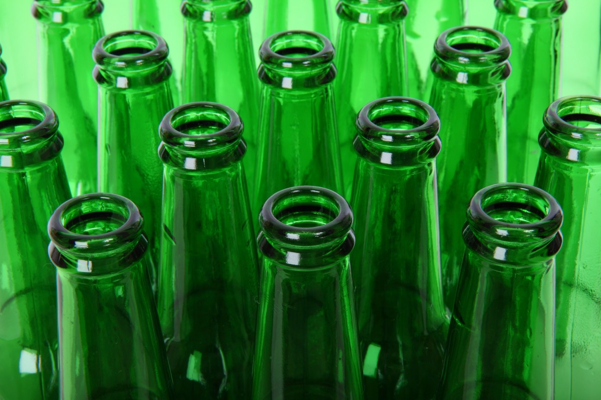

Det finns många drycker som har vatten i sig,
tex.
Hello?
Idag
Idag för 10 år sedan
- Filmjölk
- Ouzo
- Vodka (fast Vodka betyder egentligen "utan vatten" på ryska)
- Akvavit (som betyder livets vatten)
- Te (stavas ej té eller the)
- Oboy
- Vatten
Länkar:
Jimmys sida om drycker som innehåller vatten.
Denna är mycket informativ och lärorik.
Rekommenderas!

Det finns också saker som har vatten i sig men som inte är drycker, t.ex. soppa eller betong.